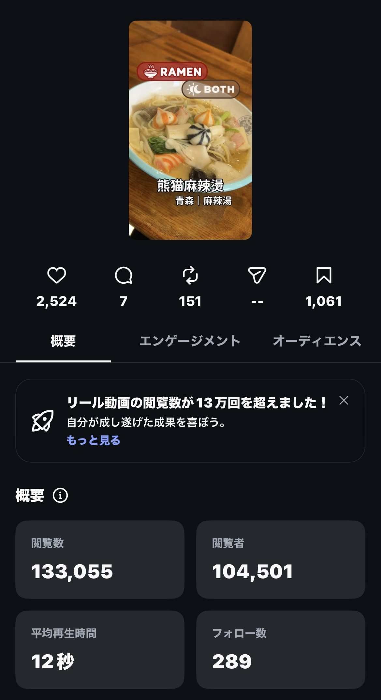
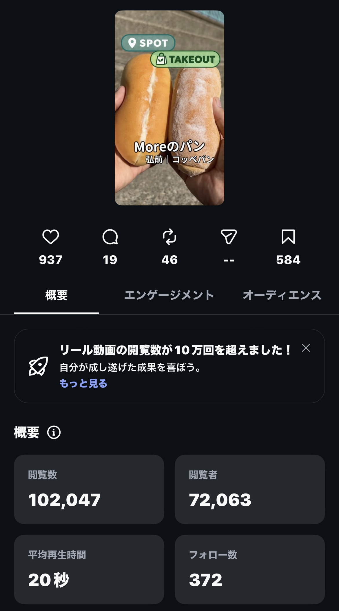

SNS / PLANNING · VIDEO · ANALYTICS

熊猫麻辣燙｜インサイト（2026年10月22日時点） Moreのパン｜インサイト（2026年10月22日時点）
TSUGARU TABLE
弘前・津軽エリアの飲食店やグルメ情報を発信するSNSプロジェクト。企画・撮影・CapCut編集・投稿・インサイト分析まで一貫して取り組んでいます。
リール制作・運用実績
実際の投稿画像とInstagramインサイトを掲載。以下の数値・資料は2026年10月22日時点のものです。
熊猫麻辣燙
2026年10月7日投稿
133,055閲覧数
2,524いいね
1,061保存
289フォロー
Moreのパン
2026年10月17日投稿
102,047閲覧数
937いいね
584保存
372フォロー
インサイト資料
Instagramの実際の画面を掲載しています。画面内の時刻・バッテリー表示は画像のトリミングで除外しています。


制作フロー
店舗・テーマ選定 → 素材撮影 → 冒頭のフック設計 → BGM・構成 → CapCutで編集 → 投稿 → インサイト分析。視聴維持率や保存数、フォロー獲得数を見ながら改善しています。
InstagramTikTokCapCut撮影動画編集分析